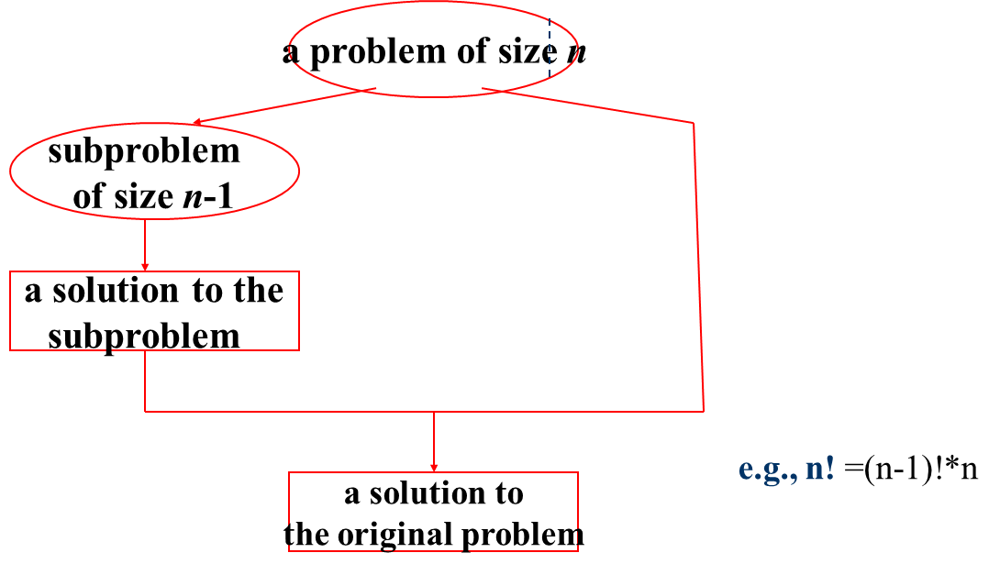
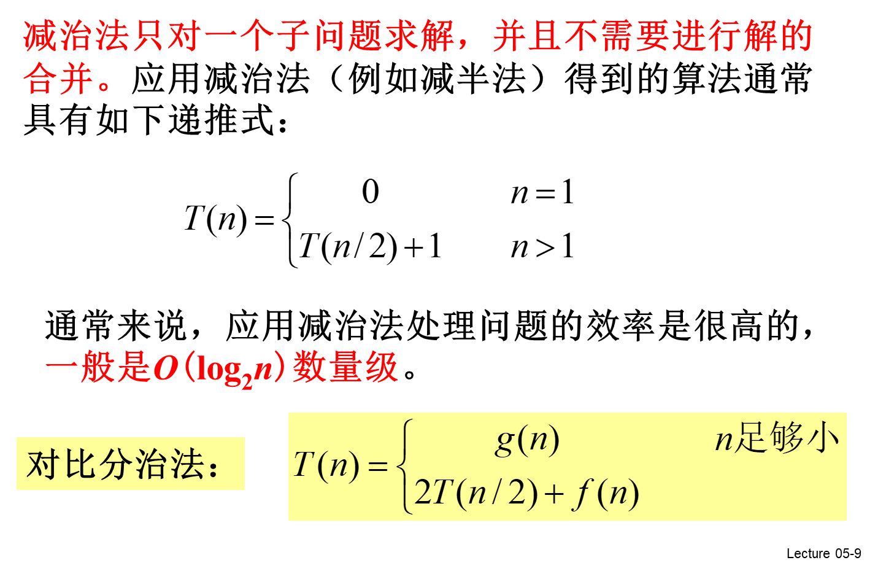

减治法(Decrease and Conquer)_huanghanqian的博客-CSDN博客_减治法规模为n的原问题的解与较小规模（通常是n/2）的子问题的解之间具有关系：（1）原问题的解只存在于其中一个较小规模的子问题中；（2）原问题的解与其中一个较小规模的解之间存在某种对应关系。由于原问题的解与较小规模的子问题的解之间存在这种关系，所以，只需求解其中一个较小规模的子问题就可以得到原问题的解。三种分类1.Decrease by a constant (usually by 1) 减去一个常量Topological Sorting拓扑排序插入排序遍历生成排列 生成子集2.Decrease by a constant factor (usually by half) 减去一个常数因子两个序列的中位数exponentiation by squaring 快速幂二分查找俄式乘法3.Variable-size decrease 减去一个可变规模Euclid's algorithm 欧几里得算法Find the k-th smallest elementNim-like games堆排序